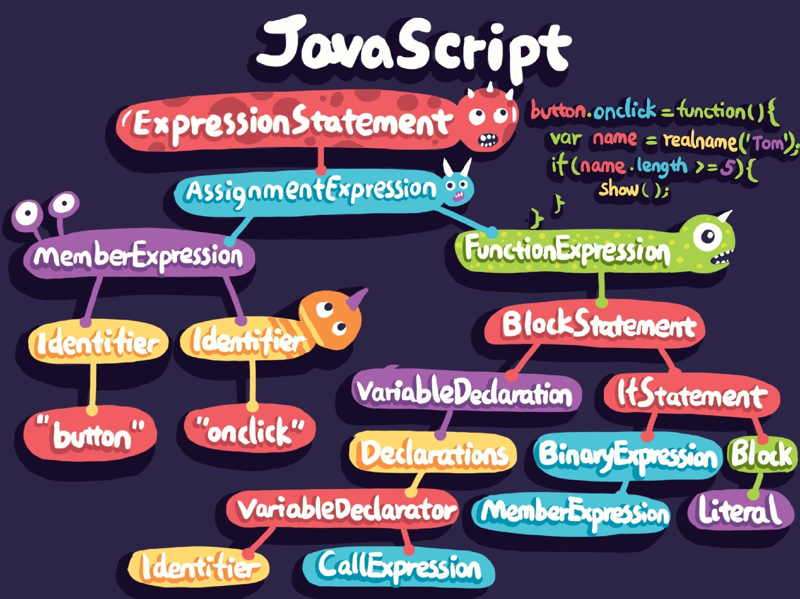
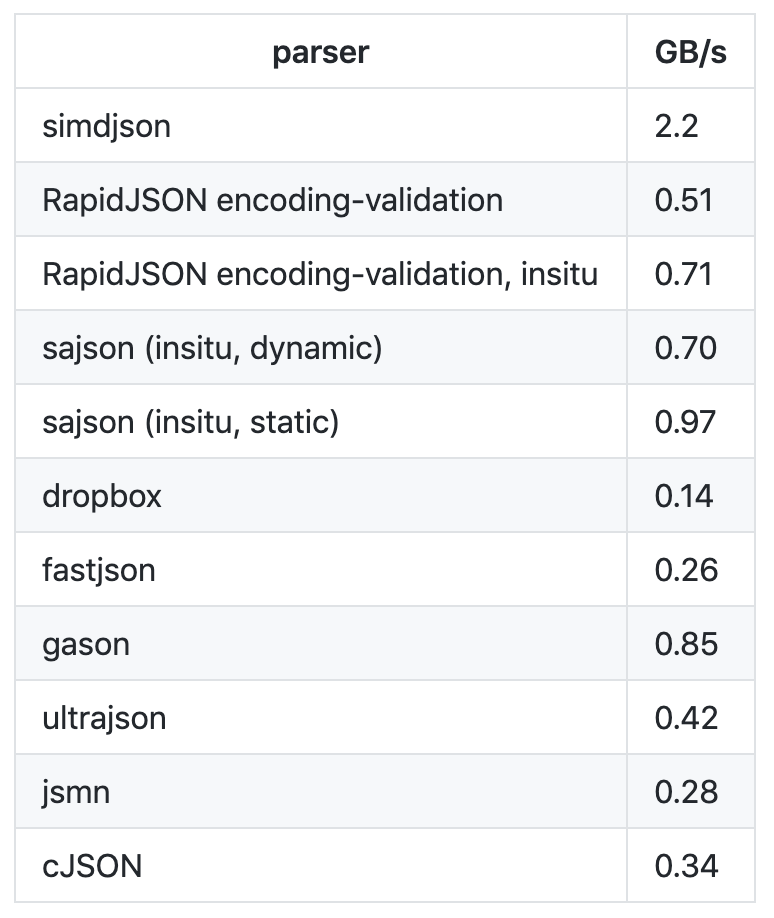

- 00 开篇词 锚定一个点，然后在这个点上深耕.md.html
- 01 建立你自己的iOS开发知识体系.md.html
- 02 App 启动速度怎么做优化与监控？.md.html
- 03 Auto Layout 是怎么进行自动布局的，性能如何？.md.html
- 04 项目大了人员多了，架构怎么设计更合理？.md.html
- 05 链接器：符号是怎么绑定到地址上的？.md.html
- 06 App 如何通过注入动态库的方式实现极速编译调试？.md.html
- 07 Clang、Infer 和 OCLint ，我们应该使用谁来做静态分析？.md.html
- 08 如何利用 Clang 为 App 提质？.md.html
- 09 无侵入的埋点方案如何实现？.md.html
- 10 包大小：如何从资源和代码层面实现全方位瘦身？.md.html
- 11 热点问题答疑（一）：基础模块问题答疑.md.html
- 12 iOS 崩溃千奇百怪，如何全面监控？.md.html
- 13 如何利用 RunLoop 原理去监控卡顿？.md.html
- 14 临近 OOM，如何获取详细内存分配信息，分析内存问题？.md.html
- 15 日志监控：怎样获取 App 中的全量日志？.md.html
- 16 性能监控：衡量 App 质量的那把尺.md.html
- 17 远超你想象的多线程的那些坑.md.html
- 18 怎么减少 App 电量消耗？.md.html
- 19 热点问题答疑（二）：基础模块问题答疑.md.html
- 20 iOS开发的最佳学习路径是什么？.md.html
- 21 除了 Cocoa，iOS还可以用哪些 GUI 框架开发？.md.html
- 22 细说 iOS 响应式框架变迁，哪些思想可以为我所用？.md.html
- 23 如何构造酷炫的物理效果和过场动画效果？.md.html
- 24 A_B 测试：验证决策效果的利器.md.html
- 25 怎样构建底层的发布和订阅事件总线？.md.html
- 26 如何提高 JSON 解析的性能？.md.html
- 27 如何用 Flexbox 思路开发？跟自动布局比，Flexbox 好在哪？.md.html
- 28 怎么应对各种富文本表现需求？.md.html
- 29 如何在 iOS 中进行面向测试驱动开发和面向行为驱动开发？.md.html
- 30 如何制定一套适合自己团队的 iOS 编码规范？.md.html
- 31 iOS 开发学习资料和书单推荐.md.html
- 32 热点问题答疑（三）.md.html
- 33 iOS 系统内核 XNU：App 如何加载？.md.html
- 34 iOS 黑魔法 Runtime Method Swizzling 背后的原理.md.html
- 35 libffi：动态调用和定义 C 函数.md.html
- 36 iOS 是怎么管理内存的？.md.html
- 37 如何编写 Clang 插件？.md.html
- 38 热点问题答疑（四）.md.html
- 39 打通前端与原生的桥梁：JavaScriptCore 能干哪些事情？.md.html
- 40 React Native、Flutter 等，这些跨端方案怎么选？.md.html
- 41 原生布局转到前端布局，开发思路有哪些转变？.md.html
- 42 iOS原生、大前端和Flutter分别是怎么渲染的？.md.html
- 43 剖析使 App 具有动态化和热更新能力的方案.md.html
- 用户故事 我是如何学习这个专栏的？.md.html
- 结束语 慢几步，深几度.md.html
- 捐赠
26 如何提高 JSON 解析的性能？
你好，我是戴铭。
在iOS 开发中，我们都会碰到这样的问题：不同团队开发的库需要进行数据通信，而通信数据规范通常很难确定。今天，我们就来聊聊如何高效地解决这个问题吧。
同一个编程语言之间的数据通信非常简单，因为数据的规范都是相同的，所以输入和输出不需要做任何转换。但是，在不同编程语言之间进行数据通信，就会比较麻烦了。比如，一种语言按照自身的标准规范输出了一份数据，另一门语言接收到时需要依据自身编程语言标准进行数据对齐。
对齐一门语言的数据或许你还能够接受，但是如果对接的语言多了，你就需要写很多份能够与之对应的数据对齐转换代码。编写和维护的成本可想而知，那么目前有没有一种通用，而且各个编程语言都能支持的数据格式呢？
答案是有的。这个数据格式，就是我今天要跟你聊的 JSON。
接下来，在今天这篇文章中，我会先和你聊聊什么是 JSON；然后，再和你说说 JSON 的使用场景，以及 iOS 里是如何解析 JSON 的；最后，再和你分析如何提高 JSON 的解析性能。
什么是 JSON？
JSON ，是JavaScript Object Notation的缩写。其实，JSON最初是被设计为 JavaScript 语言的一个子集，但最终因为和编程语言无关，所以成为了一种开放标准的常见数据格式。
虽然JSON源于 JavaScript，但到目前很多编程语言都有了 JSON 解析的库，包括 C、C++、Java、Perl、Python 等等。除此之外，还有很多编程语言内置了 JSON 生成和解析的方法，比如 PHP 在5.2版本开始内置了 json_encode() 方法，可以将 PHP 里的 Array 直接转化成 JSON。转换代码如下：
$arr = array(array(7,11,21));
echo json_encode($arr)."<br>";
$dic = array('name1' => 'val1', 'name2' => 'val2');
echo json_encode($dic)
输出结果如下：
[[7,11,21]]
{"name1":"val1","name2":"val2"}
如上所示，生成了两个 JSON 对象，第一个解析完后就是一个二维数组，第二个解析完后就是一个字典。有了编程语言内置方法解析和生成 JSON 的支持，JSON 成为了理想的数据交换格式。
通过上面生成的 JSON 可以看出，JSON 这种文本数据交换格式易读，且结构简单。
JSON基于两种结构：
- 名字/值对集合：这种结构在其他编程语言里被实现为对象、字典、Hash 表、结构体或者关联数组。
- 有序值列表：这种结构在其他编程语言里被实现为数组、向量、列表或序列。
各种编程语言都以某种形式支持着这两种结构。比如，PHP 的 Array 既支持名字/值对集合又支持有序值列表；在 Swift 里键值集合就是字典，有序值列表就是数组。名字/值对集合在 JSON 和 JavaScript 里都被称为对象。JSON语法图以及说明，你可以在 JSON 官网查看。在这里，我只列出了几个用的比较多的语法图。
 -
如上面语法图所示，对象是以左大括号开头和右大括号结尾，名字后面跟冒号，名字/值对用逗号分隔。比如：
-
如上面语法图所示，对象是以左大括号开头和右大括号结尾，名字后面跟冒号，名字/值对用逗号分隔。比如：
{"name1":"val1","name2":"val2"}
有序值列表在 JSON 和 JavaScript 里都叫数组，其语法图如下：
 -
可以看出数组是以左中括号开头，以右中括号结尾，值以逗号分隔。数组代码如下所示：
-
可以看出数组是以左中括号开头，以右中括号结尾，值以逗号分隔。数组代码如下所示：
[[7,11,21]]
语法图中值的语法图如下：
 -
可以看出，值可以是字符串、数字、对象、数组、布尔值ture、布尔值false、空值。根据这个语法，JSON 可以通过实现对象和数组的嵌套来描述更为复杂的数据结构。
-
可以看出，值可以是字符串、数字、对象、数组、布尔值ture、布尔值false、空值。根据这个语法，JSON 可以通过实现对象和数组的嵌套来描述更为复杂的数据结构。
JSON 是没有注释的，水平制表符、换行符、回车符都会被当做空格。字符串由双引号括起来，里面可以使零到多个 Unicode 字符序列，使用反斜杠来进行转义。
JSON的使用场景
JSON 的数据结构和任何一门编程语言的语法结构比起来都要简单得多，但它能干的事情却一点儿也不少，甚至可以完整地描述出一门编程语言的代码逻辑。比如，下面的这段 JavaScript 代码：
if (hour < 18) {
greeting = "Good day";
}
这段 JavaScript 代码的逻辑是，当 hour 变量小于18时，greeting 设置为 Good day 字符串，根据 JavaScript 的语法规则，完整逻辑的语法树结构可以通过 JSON 描述出来。对应的JSON，如下：
{
"type": "Program",
"body": [
{
"type": "IfStatement",
"test": {
"type": "BinaryExpression",
"left": {
"type": "Identifier",
"name": "hour"
},
"operator": "<",
"right": {
"type": "Literal",
"value": 18,
"raw": "18"
}
},
"consequent": {
"type": "BlockStatement",
"body": [
{
"type": "ExpressionStatement",
"expression": {
"type": "AssignmentExpression",
"operator": "=",
"left": {
"type": "Identifier",
"name": "greeting"
},
"right": {
"type": "Literal",
"value": "Good day",
"raw": "\"Good day\""
}
}
}
]
},
"alternate": null
}
],
"sourceType": "module"
}
从上面的 JSON 代码可以看出，每个语法树节点都是一个 JSON 对象，同级节点使用的是 JSON 数组。JavaScript 语法规则标准可以在Ecma 网站上找到。
比如下面这段 JavaScript 代码：
button.onclick = function() {
var name = realname('Tom');
if(name.length >= 5) {
show();
}
}
上面这段 JavaScript 代码对应的语法树如下图所示：
- JavaScript 编程语言的语法树能够使用 JSON 来描述，其他编程语言同样也可以，比如Objective-C 或 Swift，都能够生成自己的语法树结构，转成 JSON 后能够在运行期被动态地识别。因此，App 的业务逻辑动态化就不仅限于使用 JavaScript 这一门语言来编写，而是可以选择使用其他你熟悉的语言。
JSON 不仅可以描述业务数据使得业务数据能够动态更新，还可以用来描述业务逻辑，以实现业务逻辑的动态化，除此之外还可以用来描述页面布局。比如，我以前就做过这么一件事儿：解析一个H5页面编辑器生成的 JSON，将 JSON 对应生成 iOS 原生界面布局代码。我当时是用 Swift 语言来编写这个项目的，完整代码在这里。
在这个项目中，对JSON 的解析使用的是系统自带的 JSONDecoder 的 decode 方法，具体代码如下：
let jsonData = jsonString.data(using: .utf8)!
let decoder = JSONDecoder()
let jsonModel = try! decoder.decode(H5Editor.self, from: jsonData)
上面代码中的，H5Editor 是一个结构体，能够记录 JSON 解析后的字典和数组。H5Editor 结构体完整定义，请点击这里的链接。
那么， JSONDecoder 的 decode 方法到底是怎么解析 JSON 的呢？在我看来，了解这一过程的最好方式，就是直接看看它在Swift 源码里是怎么实现的。
JSONDecoder 如何解析 JSON？
JSONDecoder 的代码，你可以在 Swift 的官方 GitHub 上查看。
接下来，我先跟你说下解析 JSON 的入口， JSONDecoder 的 decode 方法。下面是 decode 方法的定义代码：
open func decode<T : Decodable>(_ type: T.Type, from data: Data) throws -> T {
let topLevel: Any
do {
topLevel = try JSONSerialization.jsonObject(with: data)
} catch {
throw DecodingError.dataCorrupted(DecodingError.Context(codingPath: [], debugDescription: "The given data was not valid JSON.", underlyingError: error))
}
// JSONDecoder 的初始化
let decoder = __JSONDecoder(referencing: topLevel, options: self.options)
// 从顶层开始解析 JSON
guard let value = try decoder.unbox(topLevel, as: type) else {
throw DecodingError.valueNotFound(type, DecodingError.Context(codingPath: [], debugDescription: "The given data did not contain a top-level value."))
}
return value
}
接下来，我们通过上面的代码一起来看看 decode 方法是如何解析 JSON 的。
上面 decode 方法入参 T.type 的 T 是一个泛型，具体到解析H5页面编辑器生成的 JSON 的例子，就是 H5Editor 结构体；入参 data 就是 JSON 字符串转成的 Data 数据。
decode 方法在解析完后会将解析到的数据保存到传入的结构体中，然后返回。在 decode 方法里可以看到，对于传入的 Data 数据会首先通过 JSONSerialization 方法转化成 topLevel 原生对象，然后topLevel 原生对象通过 JSONDecoder 初始化成一个 JSONDecoder 对象，最后使用 JSONDecoder 的 unbox 方法将数据和传入的结构体对应上，并保存在结构体里进行返回。
可以看出，目前 JSONSerialization 已经能够很好地解析 JSON，JSONDecoder将其包装以后，通过 unbox 方法使得 JSON 解析后能很方便地匹配 JSON 数据结构和 Swift 原生结构体。
试想一下，如果要将 JSON 应用到更大的场景时，比如对编程语言的描述或者界面布局的描述，其生成的 JSON 文件可能会很大，并且对这种大 JSON 文件解析性能的要求也会更高。那么，有比JSONSerialization性能更好的解析JSON的方法吗？
提高 JSON 解析性能
2019年2月，Geoff Langdale 和 Daniel Lemire发布了 simdjson。 simdjson是一款他们研究了很久的快速 JSON 解析器， 号称每秒可解析千兆字节 JSON 文件。simdjson 和其他 JSON 解析器对比如下图所示：
- 可以看出，只有 simdjson 能够达到每秒千兆字节级别，并且远远高于其他 JSON 解析器。那么 ，simdjson 是怎么做到的呢？接下来，我通过 simdjson 解析 JSON 的两个阶段来跟你说明下这个问题。
第一个阶段，使用 simdjson 去发现需要 JSON 里重要的字符集，比如大括号、中括号、逗号、冒号等，还有类似 true、false、null、数字这样的原子字符集。第一个阶段是没有分支处理的，这个阶段与词法分析非常类似。
第二个阶段，simdjson 也没有做分支处理，而是采用的堆栈结构，嵌套关系使用 goto 的方式进行导航。simdjson 通过索引可以处理所有输入的 JSON 内容而无需使用分支，这都归功于聪明的条件移动操作，使得遍历过程变得高效了很多。
通过 simdjson 解析 JSON 的两个阶段可以看出，simdjson的主要思路是尽可能地以最高效的方式将 JSON 这种可读性高的数据格式转换为计算机能更快理解的数据格式。
为了达到快速解析的目的， simdjson在第一个阶段一次性使用了 64字节输入进行大规模的数据操作，检查字符和字符类时以及当获得掩码应用变换时以64位进行位操作。这种方式，对于大的 JSON 数据解析性能提升是非常明显的。
如果你想更详细地了解这两个阶段的解析思路，可以查看这篇论文“Parsing Gigabytes of JSON per Second”。其实，simdjson 就是对这篇论文的实现，你可以在GitHub上查看具体的实现代码。在我看来，一边看论文，一边看对应的代码实现，不失为一种高效的学习方式。
而如果你想要在工程中使用 simdjson的话，直接使用它提供的一个简单接口即可。具体的使用代码如下：
#include "simdjson/jsonparser.h"
/...
const char * filename = ... // JSON 文件
std::string_view p = get_corpus(filename);
ParsedJson pj = build_parsed_json(p); // 解析方法
// you no longer need p at this point, can do aligned_free((void*)p.data())
if( ! pj.isValid() ) {
// 出错处理
}
aligned_free((void*)p.data());
小结
在今天这篇文章中，我和你分享了什么是 JSON，JSON 的使用场景，以及simdjson 这个开源 JSON 解析库。simdjson 能够极大地提高 JSON 解析性能，你也可以非常方便地把它用到自己的工程中。
当需要对现有方案进行优化时，有的人会利用自己扎实的计算机基础知识找出更优秀的解决方案，而有的人只能等待更优秀的解决方案的出现。simdjson的作者明显就属于前者，而我们也要不断充实自己的基础知识，努力成为这其中的一员。
课后小作业
对于 JSON 的解析库，我今天只和你分析了系统自带的 JSONSerialization 和 simdjson。那么，我想请你说说你目前使用的 JSON 解析库是什么，以及它是如何解析 JSON 的，性能又如何呢？
感谢你的收听，欢迎你在评论区给我留言分享你的观点，也欢迎把它分享给更多的朋友一起阅读。
© 2019 - 2023 Liangliang Lee. Powered by gin and hexo-theme-book.